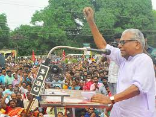

കേരളത്തിലെ പ്രമുഖ ഇടതുപക്ഷ രാഷ്ടീയ നേതാവും, ഇന്ത്യൻ സ്വാതന്ത്രസമര പോരാളിയും ആണ് വേലിക്കകത്ത് ശങ്കരൻ അച്യുതാനന്ദൻ' അഥവാ വി.എസ്. അച്യുതാനന്ദൻ (ജനനം - 1923 ഒക്ടോബർ 20, പുന്നപ്ര, ആലപ്പുഴ ജില്ല). ഇദ്ദേഹം കേരളത്തിലെ ഇരുപതാമത്തെ മുഖ്യമന്ത്രിയായിരുന്നു. നിലവിൽ സിപിഎമ്മിന്റെ കേന്ദ്ര കമ്മിറ്റി അംഗമായ ഇദ്ദേഹം കേരളത്തിലെ ജീവിച്ചിരിക്കുന്ന ഏറ്റവും ജനസമ്മതിയുള്ള നേതാവായി വിലയിരുത്തപ്പെടുന്നു. ജനകീയ പ്രശ്നങ്ങളിലും പൊതു താല്പര്യമുള്ള വിഷയങ്ങളിലും നിർഭയം പ്രതികരിക്കുന്ന അച്യുതാനന്ദന് ഒരു ബഹുജനനേതാവിന്റെ പ്രതിച്ഛായ ആർജിക്കുവാൻ കഴിഞ്ഞിട്ടുണ്ട്. മതികെട്ടാനിലെ ഭൂമി കൈയേറ്റം, പ്ലാച്ചിമടയിലെ കുടിവെള്ള പ്രശ്നം, മറയൂരിലെ ചന്ദനക്കൊള്ള തുടങ്ങിയ ജനകീയ പ്രശ്നങ്ങൾ ബഹുജന ശ്രദ്ധയിൽ കൊണ്ടുവരുന്നതിൽ അച്യുതാനന്ദൻ നിർണ്ണായക പങ്ക് വഹിച്ചിട്ടുണ്ട്[4]. മാധ്യമ പ്രവർത്തകനായ പി കെ പ്രകാശ് എഴുതിയ സമരം തന്നെ ജീവിതം' ആണ് വി എസ് അച്യുതാനന്ദന്റെ ആത്മകഥ.2005 ലെ മാധ്യമം വാർഷിക പതിപ്പിലാണ് അച്യുതാനന്ദന്റെ ആത്മകഥ പ്രസിദ്ധീകരിച്ചത്. 2006-ലെ പൊതു തെരഞ്ഞെടുപ്പിൽ ഇടതുപക്ഷമുന്നണിയെ അധികാരത്തിലെത്തിക്കുന്നതിൽ, പ്രതിപക്ഷ നേതാവെന്ന നിലയിലുള്ള അച്യുതാനന്ദന്റെ 5 വർഷക്കാലത്തെ തിളക്കമാർന്ന പ്രവർത്തനം പ്രയോജനപ്പെട്ടിട്ടുണ്ട്[5].
1980-1985, 1985-1988, 1988-1991 കാലഘട്ടത്തിൽ സി.പി.ഐ(എം) സംസ്ഥാന സെക്രട്ടറിയായിരുന്നു അദ്ദേഹം. 1967, 1970, 1991, 2001, 2006, 2011, 2016 വർഷങ്ങളിൽ സംസ്ഥാന നിയമസഭയിലേക്ക് തെരഞ്ഞെടുക്കപ്പെട്ടു. 1992 മുതൽ 1996 വരെയും 2001 മുതൽ 2006 വരെയും സഭയിൽ പ്രതിപക്ഷനേതാവായിരുന്നു. 2001-ലും 2006-ലും പാലക്കാട് ജില്ലയിലെ മലമ്പുഴ മണ്ഡലത്തിൽ നിന്നാണ് അദ്ദേഹം തെരഞ്ഞെടുക്കപ്പെട്ടത്. 2006 മെയ് 18 ന് കേരളത്തിന്റെ മുഖ്യമന്ത്രിയായി സത്യപ്രതിജ്ഞ ചെയ്ത് അധികാരമേറ്റു.
പാർട്ടിയുടെ പരമോന്നത സമിതിയായ പോളിറ്റ് ബ്യൂറോ അംഗമായിരുന്ന അച്യുതാനന്ദനെ പാർട്ടി സംസ്ഥാന സെക്രട്ടറി പിണറായി വിജയനുമായുള്ള അഭിപ്രായഭിന്നത പരസ്യപ്രസ്താവനയിലൂടെ വെളിവാക്കിയതിന്റെ പേരിൽ സമിതിയിൽ നിന്നും 2007 മേയ് 26നു താൽക്കാലികമായി പുറത്താക്കി. അച്ചടക്ക നടപടിക്കു വിധേയനായെങ്കിലും പാർട്ടി നിയോഗിച്ച മുഖ്യമന്ത്രി സ്ഥാനത്ത് അച്യുതാനന്ദൻ തുടർന്നു. പാർട്ടി അച്ചടക്കലംഘനത്തെത്തുടർന്ന് സി.പി.ഐ.എം പോളിറ്റ് ബ്യൂറോ, 2009 ജൂലൈ 12-ന് വി.എസിനെ പോളിറ്റ് ബ്യൂറോയിൽ നിന്നു പുറത്താക്കുകയും, കേന്ദ്രകമ്മറ്റിയിലേക്ക് തരം താഴ്ത്തുകയും ചെയ്തു. എന്നാൽ വി.എസിന് കേരള മുഖ്യമന്ത്രിയായി തുടരാമെന്ന് പി.ബി വ്യക്തമാക്കി. അച്ചടക്കലംഘനത്തെത്തുടർന്ന് 2012 ജൂലൈ 22-ന് ചേർന്ന കേന്ദ്രകമ്മറ്റി വി.എസിനെ പരസ്യമായി ശാസിക്കാനുള്ള പോളിറ്റ് ബ്യൂറോ തീരുമാനം അംഗീകരിച്ചു
Back to Home